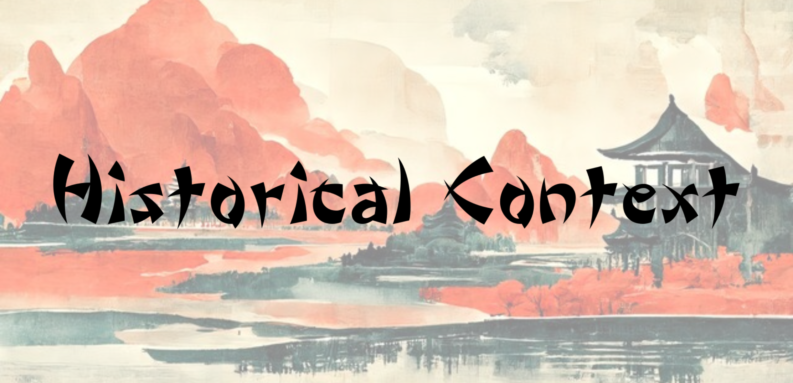
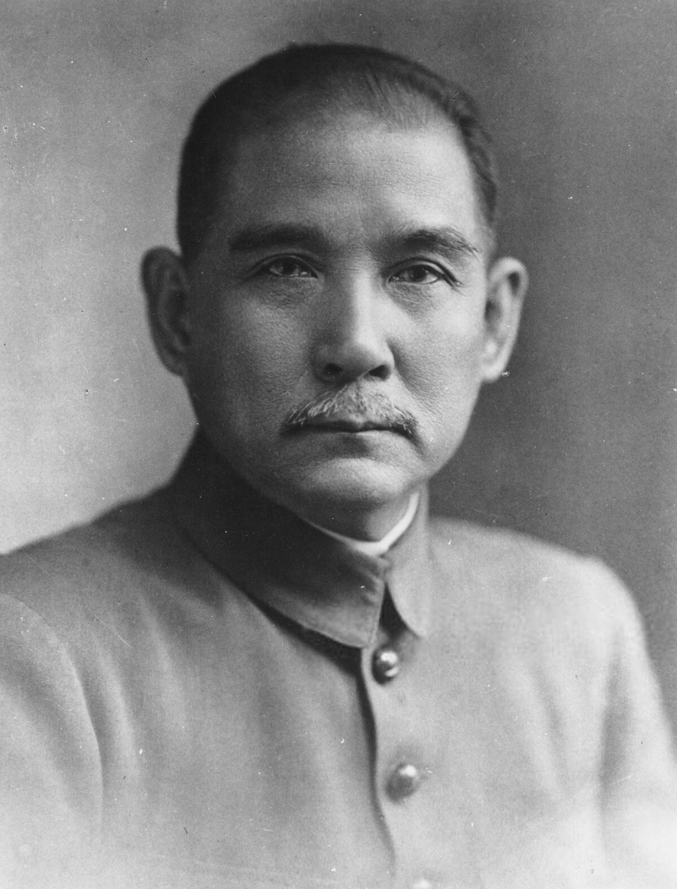
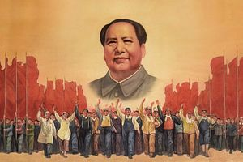
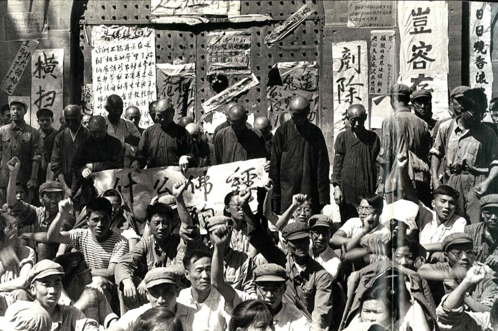
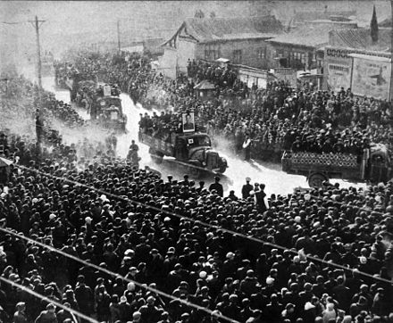
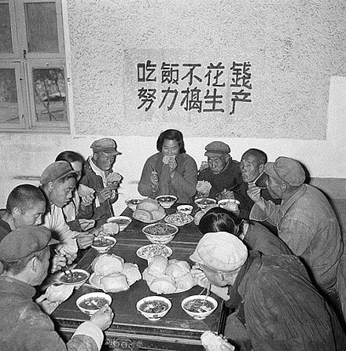
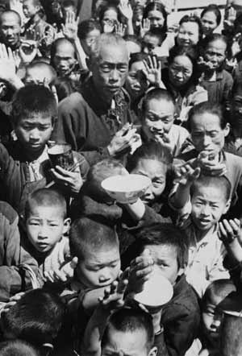
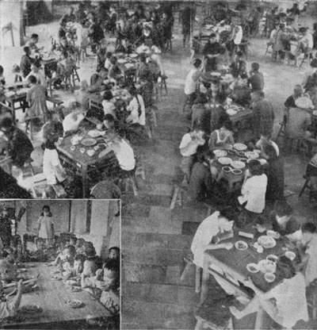

Courtesy of Adobe Stock (AI)
1911: Dr. Sun Yat-Sen
For historical context, during the revolution of 1911, led by Dr. Sun Yat-sen, the Qing dynasty was overthrown, and the Republic of China was established. However, this new government faced significant challenges, with widespread dissatisfaction, particularly among the poor.
"Though the new government created the Republic of China and established the seat of government in Nanjing, it failed to unify the country under its control."
— National Library of Medicine, 2022

Courtesy of Wikimedia
1949: Mao Ze-dong
Tensions persisted throughout both world wars, and in 1949, another revolution led by Mao Ze-dong brought an end to the republican government rule. The communist forces took control of mainland China, forming the People’s Republic of China, while the Republic of China retreated to the island of Taiwan.

Courtesy of The Diplomat

Courtesy of Li Zeng-shen
"A revolution is not a dinner party, or writing an essay, or painting a picture, or doing embroidery; it cannot be so refined, so leisurely and gentle, so temperate, kind, courteous, restrained and magnanimous. A revolution is an insurrection, an act of violence by which one class overthrows another."
— Mao Ze-dong, 1927
1959-1961: Great Leap Forward

Courtesy of Wikimedia
Mao Zedong, now the Chairman of the Chinese Communist Party, sought to create a society where the wealth gap between the rich and poor was eliminated. As part of this initiative, Mao abolished private ownership of farms, placing all agricultural production under government control. This led to inefficiencies, and combined with an exponentially growing population, resulted in widespread food shortages and famine, which were blamed on bad weather. Nevertheless, Mao encouraged people to have large families, believing a higher population would strengthen the nation.
1970s: Beginning the One-Child Policy
Chairman Mao passed away in 1976. By then, the damage to China’s economy was severe, particularly in terms of resource depletion and agricultural collapse. After Mao's death, Deng Xiaoping emerged as his successor and recognized the threat posed by China’s rapidly growing population.

Courtesy of Wikimedia

Courtesy of Alpha History

Courtesy of Wikimedia
Seeing that the increasing number of people strained China’s limited resources, Deng Xiaoping officially implimented the One-Child Policy nationwide on September 25, 1980, aiming to curb population growth and to turn attention toward economic development.